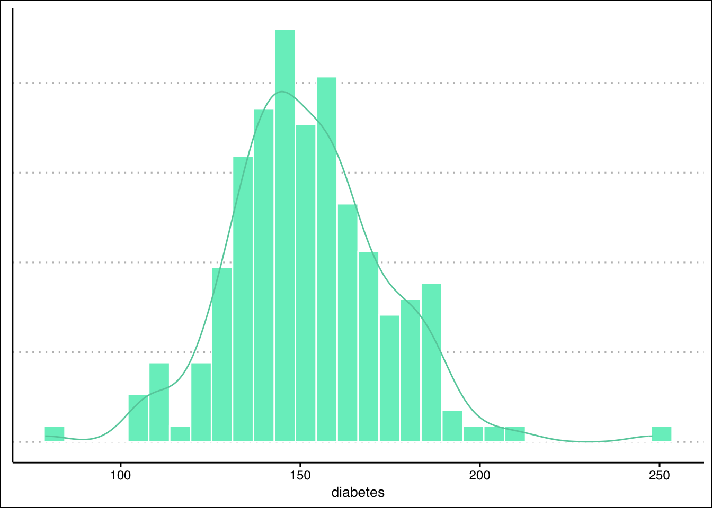
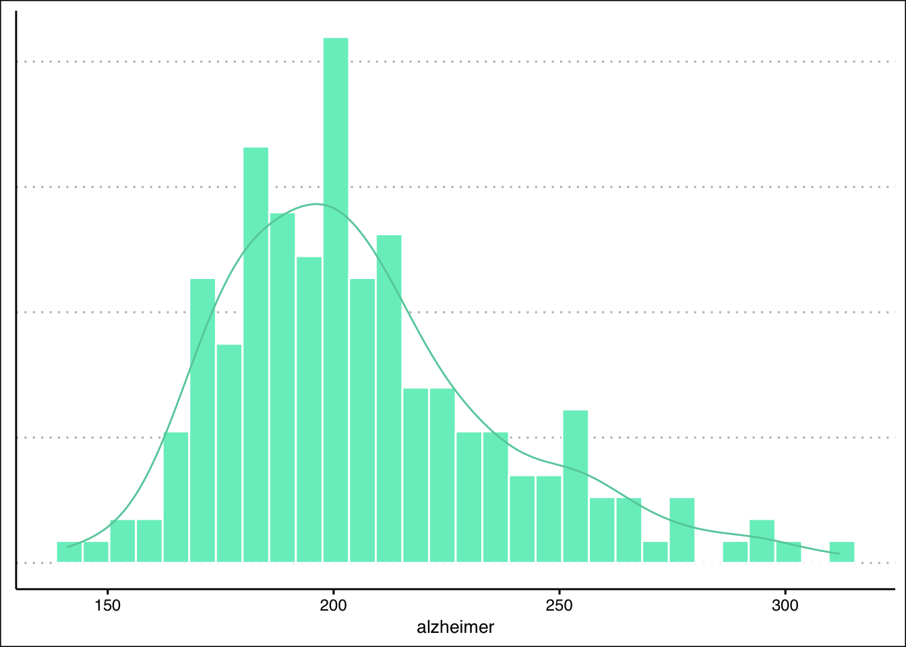
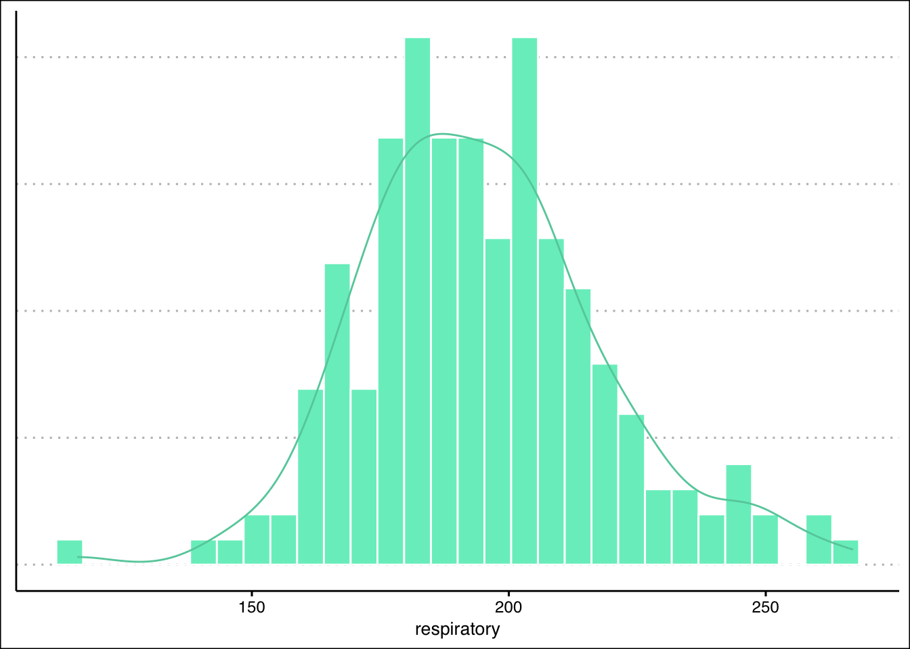
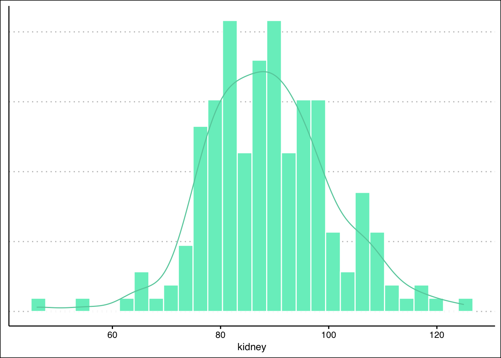
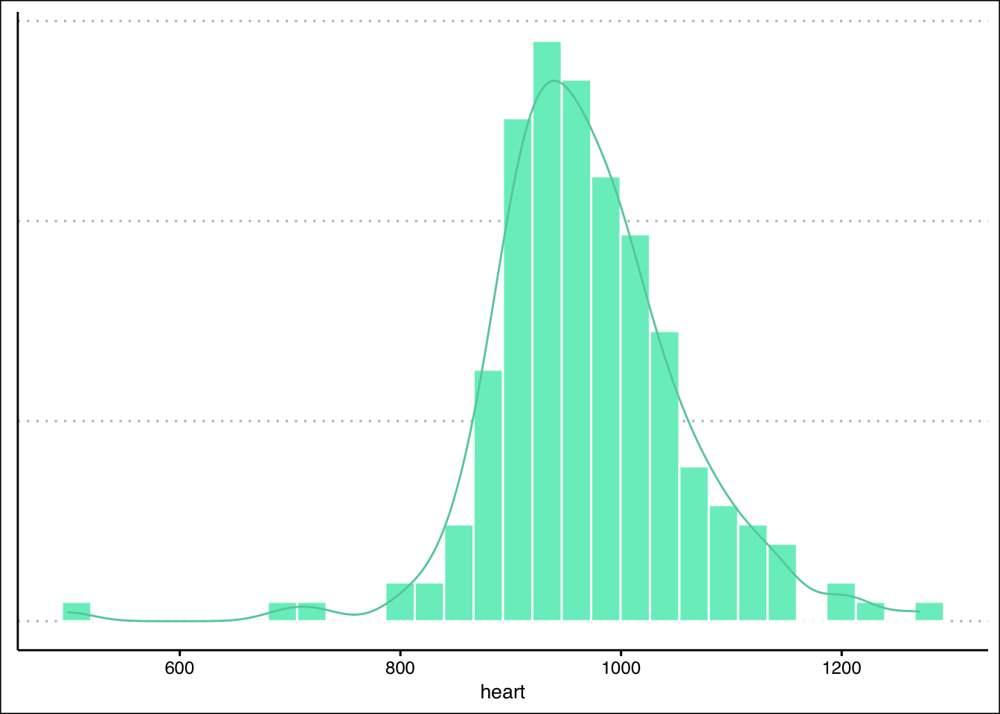
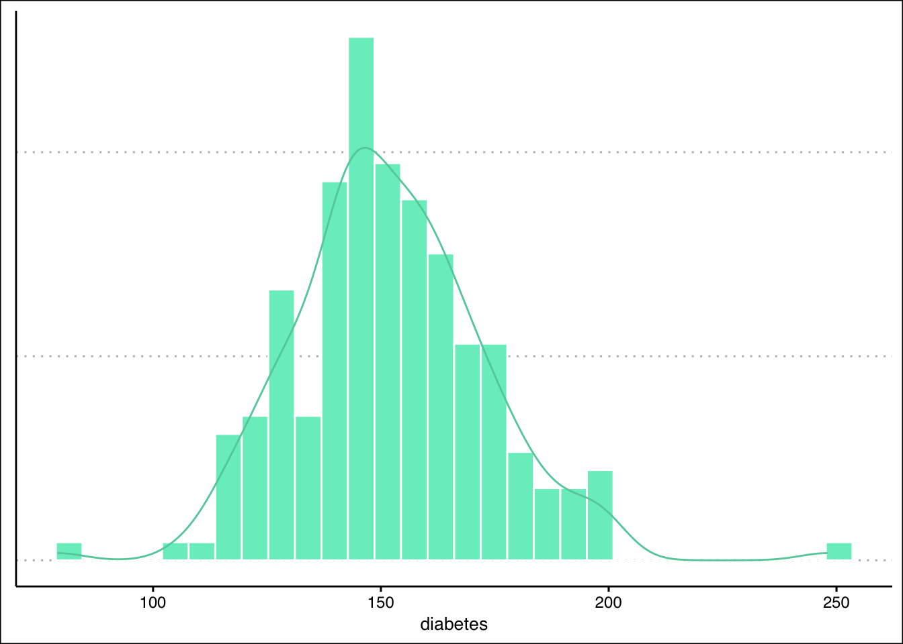
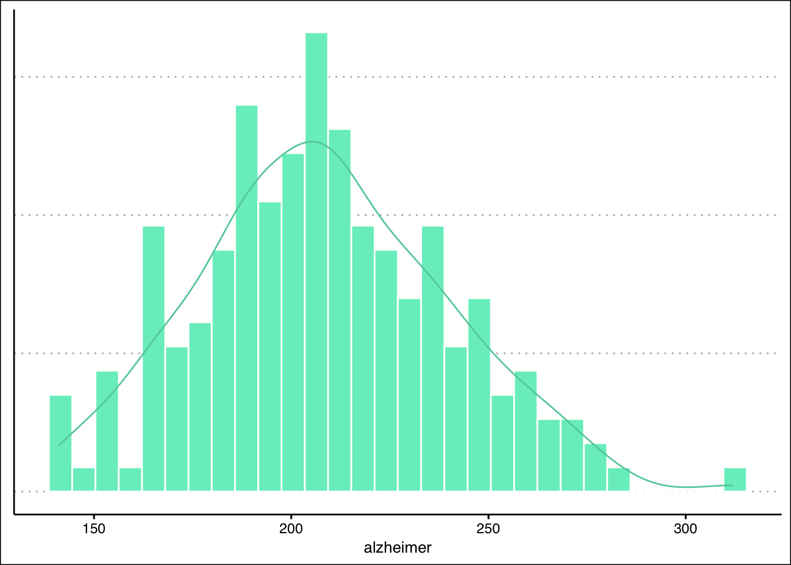
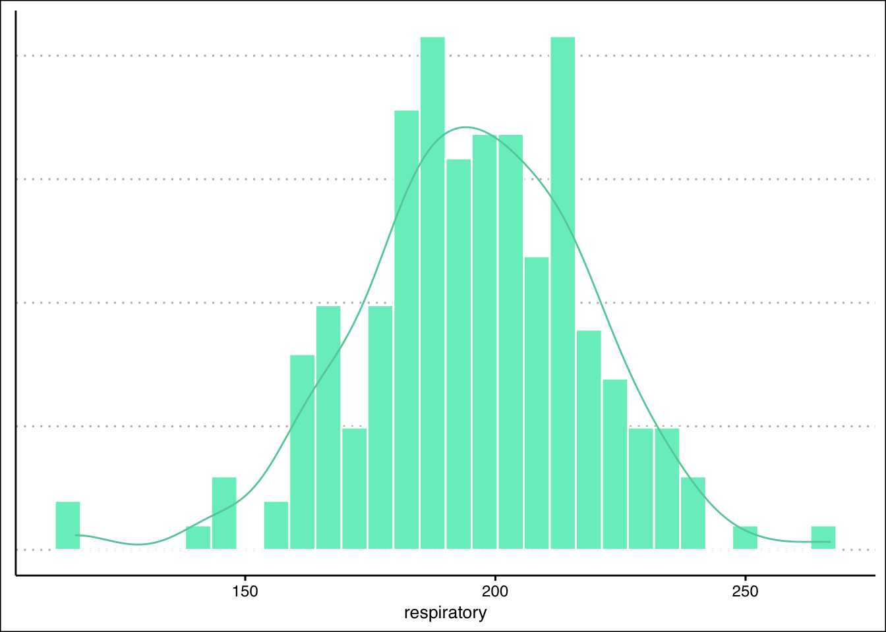
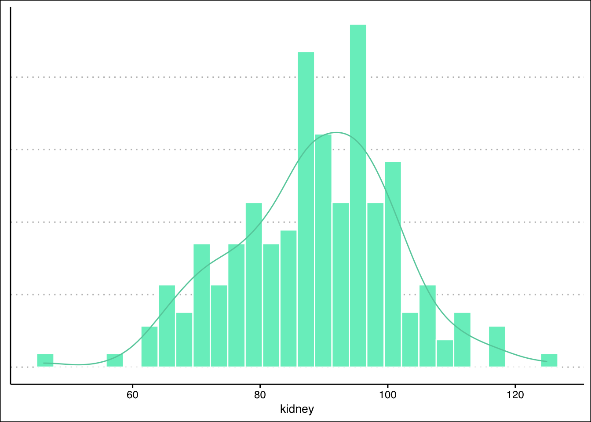
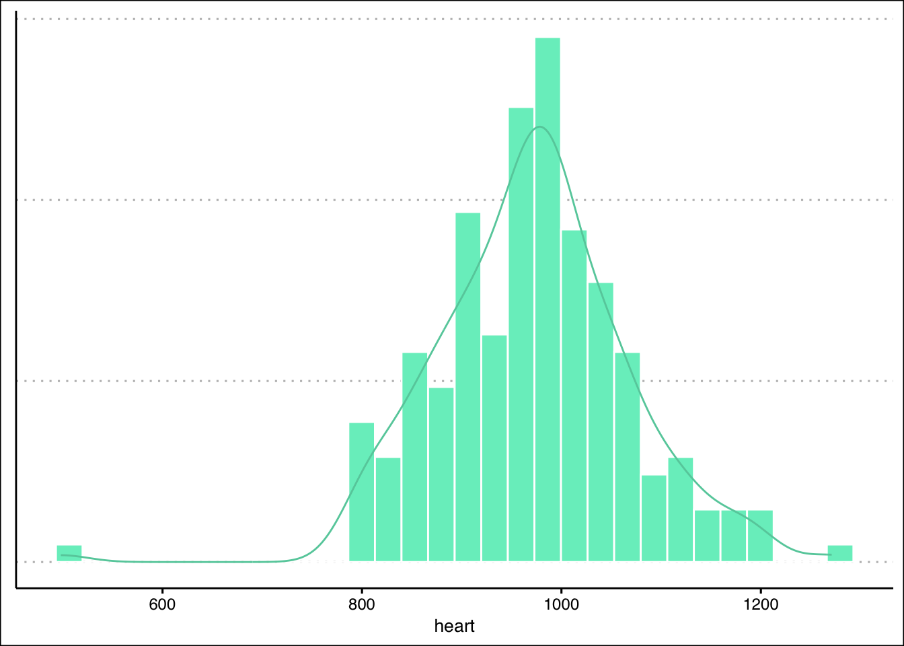

# load and install necessary packages for notebook
pacman::p_load(here,
tidyverse,
ggthemes,
patchwork,
skimr)
# read in original dataframe
cdc_df <- read_csv(here("syn-data-exercise/data/raw-data/Weekly_Provisional_Counts_of_Deaths_by_State_and_Select_Causes__2020-2023_20240703.csv"),
col_names = TRUE,
show_col_types = FALSE,
name_repair = make.names)Synthetic Data Exercise
Introduction and Setup
For this exercise we’ll begin by cleaning and then exploring some real data gathered from the CDC to understand the underlying distributions and relationships that exist between the data points contained within. Once we’ve done so we’ll generate synthetic data designed to approximate the same relationships and distributions, but that can be explored and modeled independent of original observations.
The data set that we’re utlizing for this exercise can be found at the CDC’s website below: CDC Counts of Death by State and Cause
This data set is summarized by the CDC as containing “provisional counts of deaths by the week the deaths occurred, by state of occurrence, and by select underlying causes of death for 2020-2023.”
Data Import and Name Repair
Exploring the original data
Subsetting and handling missing values
# examine the data types, distributions, and missing values of the various columns contained within
skim(cdc_df)| Name | cdc_df |
| Number of rows | 10476 |
| Number of columns | 35 |
| _______________________ | |
| Column type frequency: | |
| character | 14 |
| Date | 1 |
| logical | 3 |
| numeric | 17 |
| ________________________ | |
| Group variables | None |
Variable type: character
| skim_variable | n_missing | complete_rate | min | max | empty | n_unique | whitespace |
|---|---|---|---|---|---|---|---|
| Data.As.Of | 0 | 1.00 | 10 | 10 | 0 | 1 | 0 |
| Jurisdiction.of.Occurrence | 0 | 1.00 | 4 | 20 | 0 | 54 | 0 |
| flag_sept | 6083 | 0.42 | 23 | 23 | 0 | 1 | 0 |
| flag_diab | 8234 | 0.21 | 23 | 23 | 0 | 1 | 0 |
| flag_alz | 8732 | 0.17 | 23 | 23 | 0 | 1 | 0 |
| flag_inflpn | 6241 | 0.40 | 23 | 23 | 0 | 1 | 0 |
| flag_clrd | 8965 | 0.14 | 23 | 23 | 0 | 1 | 0 |
| flag_otherresp | 6305 | 0.40 | 23 | 23 | 0 | 1 | 0 |
| flag_nephr | 6716 | 0.36 | 23 | 23 | 0 | 1 | 0 |
| flag_otherunk | 5813 | 0.45 | 23 | 23 | 0 | 1 | 0 |
| flag_hd | 10464 | 0.00 | 23 | 23 | 0 | 1 | 0 |
| flag_stroke | 9031 | 0.14 | 23 | 23 | 0 | 1 | 0 |
| flag_cov19mcod | 8721 | 0.17 | 23 | 23 | 0 | 1 | 0 |
| flag_cov19ucod | 8180 | 0.22 | 23 | 23 | 0 | 1 | 0 |
Variable type: Date
| skim_variable | n_missing | complete_rate | min | max | median | n_unique |
|---|---|---|---|---|---|---|
| Week.Ending.Date | 0 | 1 | 2020-01-04 | 2023-09-16 | 2021-11-09 | 194 |
Variable type: logical
| skim_variable | n_missing | complete_rate | mean | count |
|---|---|---|---|---|
| flag_allcause | 10476 | 0 | NaN | : |
| flag_natcause | 10476 | 0 | NaN | : |
| flag_neopl | 10476 | 0 | NaN | : |
Variable type: numeric
| skim_variable | n_missing | complete_rate | mean | sd | p0 | p25 | p50 | p75 | p100 | hist |
|---|---|---|---|---|---|---|---|---|---|---|
| MMWR.Year | 0 | 1.00 | 2021.38 | 1.08 | 2020 | 2020.00 | 2021.0 | 2022 | 2023 | ▇▇▁▇▆ |
| MMWR.Week | 0 | 1.00 | 25.21 | 14.68 | 1 | 13.00 | 25.0 | 37 | 53 | ▇▇▇▆▆ |
| All.Cause | 0 | 1.00 | 2362.29 | 8552.04 | 12 | 366.75 | 931.5 | 1548 | 87415 | ▇▁▁▁▁ |
| Natural.Cause | 0 | 1.00 | 2151.95 | 7799.52 | 12 | 331.00 | 837.0 | 1405 | 81622 | ▇▁▁▁▁ |
| Septicemia..A40.A41. | 4393 | 0.58 | 47.76 | 135.98 | 0 | 13.00 | 20.0 | 33 | 993 | ▇▁▁▁▁ |
| Malignant.neoplasms..C00.C97. | 10 | 1.00 | 431.88 | 1551.42 | 10 | 66.00 | 171.0 | 282 | 12284 | ▇▁▁▁▁ |
| Diabetes.mellitus..E10.E14. | 2242 | 0.79 | 90.65 | 289.45 | 0 | 22.00 | 34.0 | 57 | 2601 | ▇▁▁▁▁ |
| Alzheimer.disease..G30. | 1744 | 0.83 | 103.95 | 343.78 | 0 | 21.00 | 40.0 | 65 | 3075 | ▇▁▁▁▁ |
| Influenza.and.pneumonia..J09.J18. | 4235 | 0.60 | 53.17 | 161.35 | 0 | 13.00 | 20.0 | 34 | 1916 | ▇▁▁▁▁ |
| Chronic.lower.respiratory.diseases..J40.J47. | 1511 | 0.86 | 121.17 | 405.90 | 0 | 27.00 | 48.0 | 83 | 3708 | ▇▁▁▁▁ |
| Other.diseases.of.respiratory.system..J00.J06.J30.J39.J67.J70.J98. | 4171 | 0.60 | 52.64 | 152.54 | 0 | 14.00 | 21.0 | 37 | 1135 | ▇▁▁▁▁ |
| Nephritis..nephrotic.syndrome.and.nephrosis..N00.N07.N17.N19.N25.N27. | 3760 | 0.64 | 58.75 | 173.17 | 0 | 14.00 | 23.0 | 40 | 1349 | ▇▁▁▁▁ |
| Symptoms..signs.and.abnormal.clinical.and.laboratory.findings..not.elsewhere.classified..R00.R99. | 4663 | 0.55 | 53.78 | 184.61 | 0 | 12.00 | 19.0 | 33 | 3541 | ▇▁▁▁▁ |
| Diseases.of.heart..I00.I09.I11.I13.I20.I51. | 12 | 1.00 | 493.53 | 1778.18 | 10 | 72.00 | 190.0 | 329 | 16538 | ▇▁▁▁▁ |
| Cerebrovascular.diseases..I60.I69. | 1445 | 0.86 | 133.06 | 447.08 | 0 | 25.00 | 48.0 | 80 | 3833 | ▇▁▁▁▁ |
| COVID.19..U071..Multiple.Cause.of.Death. | 1755 | 0.83 | 262.64 | 1271.45 | 0 | 22.00 | 53.0 | 139 | 26028 | ▇▁▁▁▁ |
| COVID.19..U071..Underlying.Cause.of.Death. | 2296 | 0.78 | 241.41 | 1179.92 | 0 | 19.00 | 45.0 | 128 | 23954 | ▇▁▁▁▁ |
In the original, complete dataset we can see that there are many unneccesary flag columns as well as many variables whose data are missing. In order to address some of these concerns, for now we’ll limit the scope of our exploration to just the state of Texas and those columns with analytical merit.
# subsetting the dataframe to reduce the scope to just Texas data and to remove flag columns without much consequential data
texas_df <- cdc_df %>%
select(-1, -3:-4, -21:-35) %>%
filter(Jurisdiction.of.Occurrence == "Texas") %>%
select(2, 7:8, 10, 12, 14)
# renaming the columns
newNames <- colnames(texas_df)
names(newNames) <- c("week", "diabetes", "alzheimer", "respiratory", "kidney", "heart")
texas_df <- texas_df %>%
rename(all_of(newNames))Having limited the scope we now have 15 numeric variables, 1 date variable, and 1 character variable – all of which contain zero missing values except for those pertaining to COVID-19 in the early stages of the pandemic. We’ll assume these values weren’t well understood or tracked at that time and choose not to select them for the purposes of this exploration.
Having selected a handful of interesting and complete features (specifically diabetes, Alzheimer’s, chronic respiratory disease, kidney disease, and heart disease) we now save this data as a new dataframe and proceed with exploring the underlying distributions further.
Visualizing distributions and summarizing numeric features
Now that we have our subset dataframe we can visualize the distributions of each feature to determine their shape and also examine the summary statistics for each feature. Each of which will aid in generating synthetic data that closely resembles the original Texas data.
# subset just the numeric features
texas_num <- texas_df %>%
select(where(is.numeric))
# function for plotting multiple columns iteratively through the dataframe
histfunc <- function(colname) {
colname <- sym(colname)
plot <- texas_num %>%
ggplot(aes(x = !!colname)) +
geom_histogram(aes(y = after_stat(density)), col ="white", fill = "aquamarine2", bins = 30) +
geom_density(col = "aquamarine3") +
theme_clean() +
ylab(NULL) +
theme(axis.text.y=element_blank(),
axis.ticks.y=element_blank())
}
# iterating through the numeric columns of the dataframe with the above function and plotting the results
hists <- lapply(colnames(texas_num), FUN = histfunc)
hists[[1]]
hists[[2]]
hists[[3]]
hists[[4]]
hists[[5]]
# summarize numeric characteristics
skim(texas_num)| Name | texas_num |
| Number of rows | 194 |
| Number of columns | 5 |
| _______________________ | |
| Column type frequency: | |
| numeric | 5 |
| ________________________ | |
| Group variables | None |
Variable type: numeric
| skim_variable | n_missing | complete_rate | mean | sd | p0 | p25 | p50 | p75 | p100 | hist |
|---|---|---|---|---|---|---|---|---|---|---|
| diabetes | 0 | 1 | 151.90 | 22.02 | 79 | 138.00 | 150.0 | 165.00 | 248 | ▁▇▇▂▁ |
| alzheimer | 0 | 1 | 206.34 | 31.29 | 141 | 183.25 | 200.0 | 222.75 | 312 | ▂▇▃▂▁ |
| respiratory | 0 | 1 | 194.73 | 23.68 | 116 | 178.25 | 193.0 | 207.75 | 267 | ▁▃▇▃▁ |
| kidney | 0 | 1 | 88.90 | 11.79 | 46 | 81.00 | 88.5 | 96.00 | 125 | ▁▂▇▅▁ |
| heart | 0 | 1 | 968.10 | 89.36 | 498 | 913.75 | 960.0 | 1014.50 | 1271 | ▁▁▇▇▁ |
With the above plots we can see that most of the numeric features follow normal or at least nearly normal distributions. This fact, when paired with the mean and standard deviations for each value, should hopefully make generating synthetic data that closely approximates the original data fairly straightforward.
Generating synthetic data
This part contributed to by William Hyltin.
To create the synthetic dataset, i used the following prompt in ChatGPT: Help me create code that will generate a synthetic dataset in R with the following characteristics:
The dataset with bein a dataframe format with 6 columns and 194 rows.
The first column would be in a date format, with weekly dates ranging from Jan 4th, 2020 to September 16th, 20023
The second column would be aggregated counts of deaths from diabetes. The mean value of the column would be 151.90206, with a standard deviation of 22.02438, a minimum of 79, first quartile of 138, median of 150, 3rd quartile of 165, and maximum of 248. The distribution should appear relatively bell-shaped except for the outlier maximum value
The third column would be aggregated counts of deaths from alzheimers. The mean value of the column would be 206.34021, with a standard deviation of 31.28869, a minimum of 141, first quartile of 183.25, median of 200.0, 3rd quartile of 222.75, and maximum of 312. The distribution should appear somewhat bell-shaped and right skewed.
The fourth column would be aggregated counts of deaths from respiratory disease. The mean value of the column would be 194.72680, with a standard deviation of 23.67926, a minimum of 116, first quartile of 178.25, median of 193.0, 3rd quartile of 207.75, and maximum of 267. The distribution should appear somewhat bell-shaped and fairly symmetrical.
The fifth column would be aggregated counts of deaths from kidney disease. The mean value of the column would be 88.89691, with a standard deviation of 11.78520, a minimum of 46, first quartile of 81.00, median of 88.5, 3rd quartile of 96.00, and maximum of 125. The distribution should appear somewhat bimodal bell-shaped.
The fifth column would be aggregated counts of deaths from heart disease. The mean value of the column would be 968.10309, with a standard deviation of 89.36407, a minimum of 498, first quartile of 913.75, median of 960.0, 3rd quartile of 1014.50, and maximum of 1271. The distribution should appear somewhat bell-shaped, but left skewed due to the minimum value being an outlier.
# Set seed for reproducibility
set.seed(123)
# Generate dates from Jan 4th, 2020 to Sep 16th, 2023 (weekly dates)
dates <- seq(as.Date("2020-01-04"), as.Date("2023-09-16"), by = "week")
# Generate synthetic data
data <- data.frame(
Date = dates,
Diabetes_Deaths = round(rnorm(length(dates), mean = 151.90206, sd = 22.02438), 0),
Alzheimer_Deaths = round(rnorm(length(dates), mean = 206.34021, sd = 31.28869), 0),
Respiratory_Deaths = round(rnorm(length(dates), mean = 194.72680, sd = 23.67926), 0),
Kidney_Deaths = round(rnorm(length(dates), mean = 88.89691, sd = 11.78520), 0),
Heart_Deaths = round(rnorm(length(dates), mean = 968.10309, sd = 89.36407), 0)
)
# Adjusting outliers to match specified min and max values
data[data$Diabetes_Deaths==min(data$Diabetes_Deaths), 2] <- 79
data[data$Diabetes_Deaths==max(data$Diabetes_Deaths), 2] <- 248
data[data$Alzheimer_Deaths==min(data$Alzheimer_Deaths), 3] <- 141
data[data$Alzheimer_Deaths==max(data$Alzheimer_Deaths), 3] <- 312
data[data$Respiratory_Deaths==min(data$Respiratory_Deaths), 4] <- 116
data[data$Respiratory_Deaths==max(data$Respiratory_Deaths), 4] <- 267
data[data$Kidney_Deaths==min(data$Kidney_Deaths), 5] <- 46
data[data$Kidney_Deaths==max(data$Kidney_Deaths), 5] <- 125
data[data$Heart_Deaths==min(data$Heart_Deaths), 6] <- 498
data[data$Heart_Deaths==max(data$Heart_Deaths), 6] <- 1271
# Display summary statistics
summary(data) Date Diabetes_Deaths Alzheimer_Deaths Respiratory_Deaths
Min. :2020-01-04 Min. : 79.0 Min. :141.0 Min. :116.0
1st Qu.:2020-12-06 1st Qu.:139.0 1st Qu.:188.0 1st Qu.:182.0
Median :2021-11-09 Median :151.0 Median :207.0 Median :196.0
Mean :2021-11-09 Mean :151.9 Mean :208.1 Mean :195.5
3rd Qu.:2022-10-13 3rd Qu.:164.0 3rd Qu.:228.0 3rd Qu.:211.8
Max. :2023-09-16 Max. :248.0 Max. :312.0 Max. :267.0
Kidney_Deaths Heart_Deaths
Min. : 46.00 Min. : 498.0
1st Qu.: 80.00 1st Qu.: 911.2
Median : 89.00 Median : 973.5
Mean : 88.52 Mean : 971.2
3rd Qu.: 96.00 3rd Qu.:1027.5
Max. :125.00 Max. :1271.0 # View the structure of the dataframe
str(data)'data.frame': 194 obs. of 6 variables:
$ Date : Date, format: "2020-01-04" "2020-01-11" ...
$ Diabetes_Deaths : num 140 147 186 153 155 190 162 124 137 142 ...
$ Alzheimer_Deaths : num 165 269 225 167 187 169 275 247 198 223 ...
$ Respiratory_Deaths: num 184 203 179 144 216 175 181 230 176 215 ...
$ Kidney_Deaths : num 75 95 77 86 93 80 96 73 46 94 ...
$ Heart_Deaths : num 968 943 1011 943 1041 ...# View the first few rows of the dataframe
head(data) Date Diabetes_Deaths Alzheimer_Deaths Respiratory_Deaths Kidney_Deaths
1 2020-01-04 140 165 184 75
2 2020-01-11 147 269 203 95
3 2020-01-18 186 225 179 77
4 2020-01-25 153 167 144 86
5 2020-02-01 155 187 216 93
6 2020-02-08 190 169 175 80
Heart_Deaths
1 968
2 943
3 1011
4 943
5 1041
6 1049The code provided by ChatGPT worked reasonably well, however some rewriting was necessary to get the min and max override section to work properly.
newNames2 <- colnames(data)
names(newNames2) <- c("week", "diabetes", "alzheimer", "respiratory", "kidney", "heart")
data <- data %>%
rename(all_of(newNames2))
histfunc2 <- function(colname) {
colname <- sym(colname)
plot <- data %>%
ggplot(aes(x = !!colname)) +
geom_histogram(aes(y = after_stat(density)), col ="white", fill = "aquamarine2", bins = 30) +
geom_density(col = "aquamarine3") +
theme_clean() +
ylab(NULL) +
theme(axis.text.y=element_blank(),
axis.ticks.y=element_blank())
}
skim(data)| Name | data |
| Number of rows | 194 |
| Number of columns | 6 |
| _______________________ | |
| Column type frequency: | |
| Date | 1 |
| numeric | 5 |
| ________________________ | |
| Group variables | None |
Variable type: Date
| skim_variable | n_missing | complete_rate | min | max | median | n_unique |
|---|---|---|---|---|---|---|
| week | 0 | 1 | 2020-01-04 | 2023-09-16 | 2021-11-09 | 194 |
Variable type: numeric
| skim_variable | n_missing | complete_rate | mean | sd | p0 | p25 | p50 | p75 | p100 | hist |
|---|---|---|---|---|---|---|---|---|---|---|
| diabetes | 0 | 1 | 151.94 | 21.36 | 79 | 139.00 | 151.0 | 164.00 | 248 | ▁▆▇▁▁ |
| alzheimer | 0 | 1 | 208.14 | 31.62 | 141 | 188.00 | 207.0 | 228.00 | 312 | ▃▇▆▂▁ |
| respiratory | 0 | 1 | 195.53 | 23.15 | 116 | 182.00 | 196.0 | 211.75 | 267 | ▁▂▇▅▁ |
| kidney | 0 | 1 | 88.52 | 12.68 | 46 | 80.00 | 89.0 | 96.00 | 125 | ▁▃▇▆▁ |
| heart | 0 | 1 | 971.16 | 96.63 | 498 | 911.25 | 973.5 | 1027.50 | 1271 | ▁▁▇▇▁ |
hists2 <- lapply(colnames(data[,-1]), FUN = histfunc2)
hists2[[1]]
hists2[[2]]
hists2[[3]]
hists2[[4]]
hists2[[5]]
The synthetic data fits relatively well when looking at the summary statistics. The plots are reasonably close, but the trickiest part here is the use of the rnorm function. The function does not have a good way to account for skewness, however it is one of the best I have found for bell-shaped synthetic data that gives control of mean and standard deviation. A potential solution to match the skewness might be using other sampling distribution functions like rbeta or rexp, but these don’t give the same level of control over the mean and standard devitation without significant knowledge of these distributions or trial and error, so I chose to override the min and max values and that seemed to improve the shape relatively well.